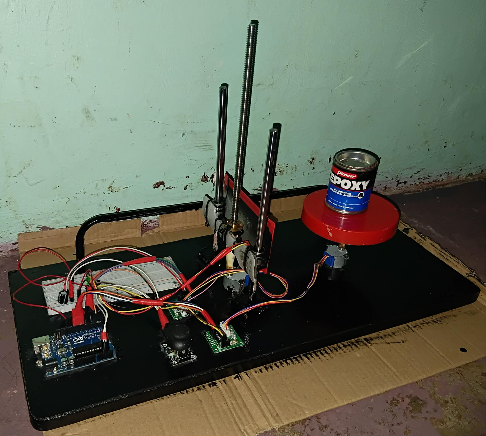
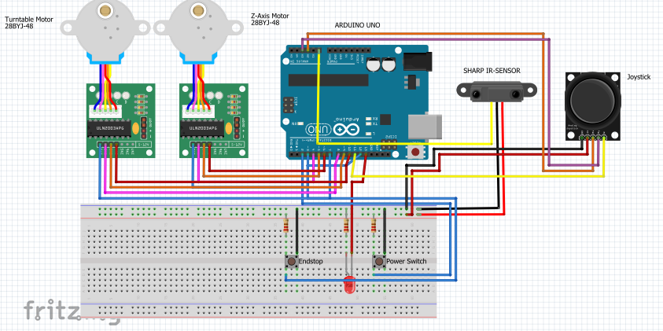
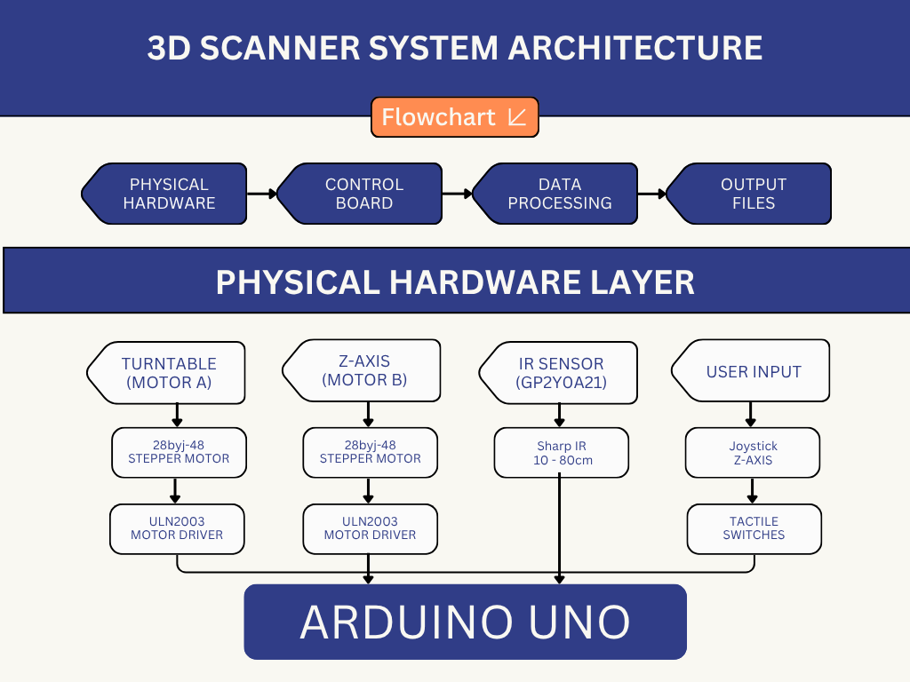
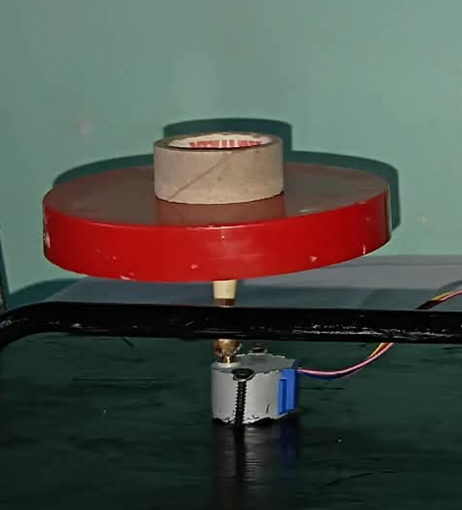
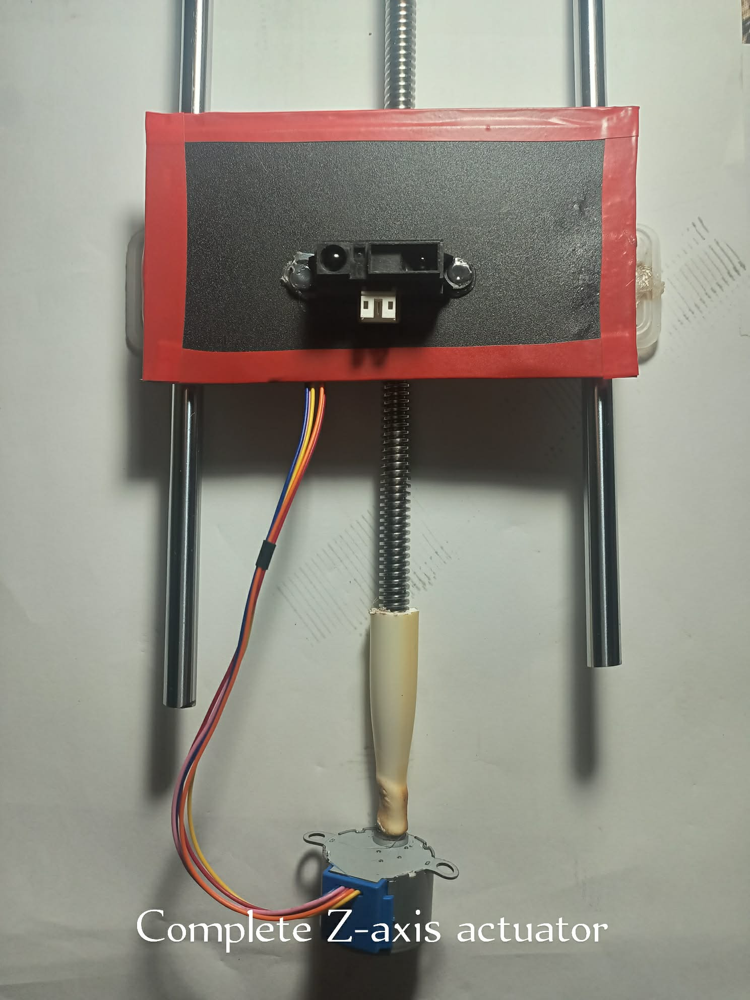
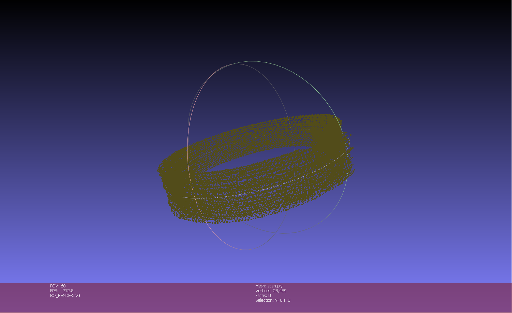
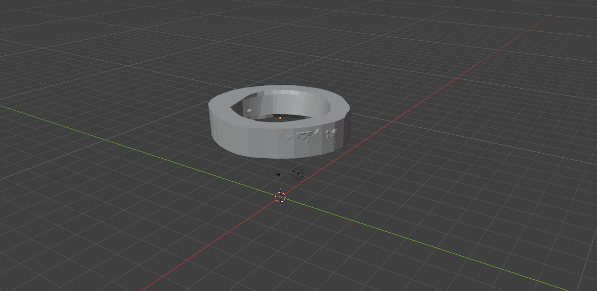
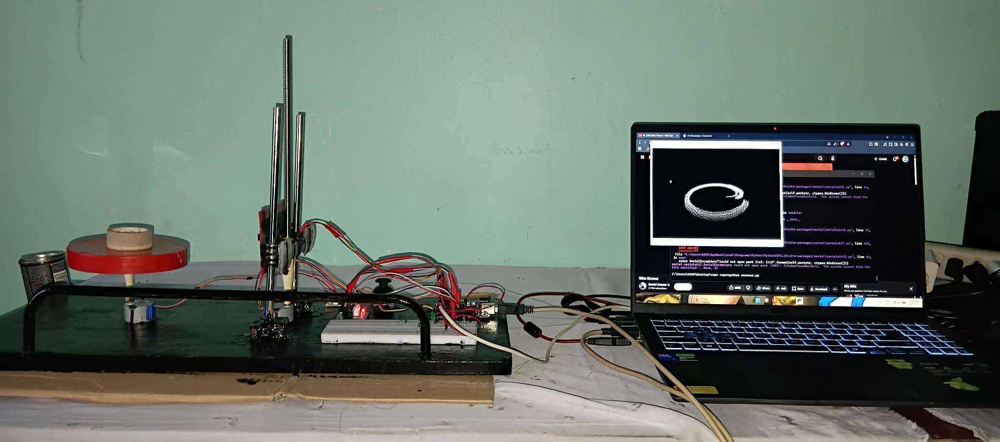

TEM Analogy · Real-time 3D Reconstruction · DIY Instrumentation
Capski Research
Problem: Understanding Transmission Electron Microscopy (TEM) is challenging for undergraduate students due to abstract concepts, high costs, and limited access to real instruments. Most learners never see how scanning, signal detection, and 3D reconstruction actually work.
Purpose: To build a low‑cost, macro‑scale 3D scanner that mimics the fundamental principles of TEM – systematic scanning, layer‑by‑layer acquisition, and digital reconstruction – making the invisible process tangible and interactive for educational demonstrations.

Figure 1: Complete scanner assembly.

Figure 2: Wiring schematic.

Figure 3: System architecture – Arduino control and User Interaction.

Turntable mechanism with 28BYJ‑48 motor

Z-axis lead screw and stepper mount

Point cloud reconstruction of a roll of tape

Blender visualization of scan data

Complete lab setup during testing
The Capski research team
Team Capski: